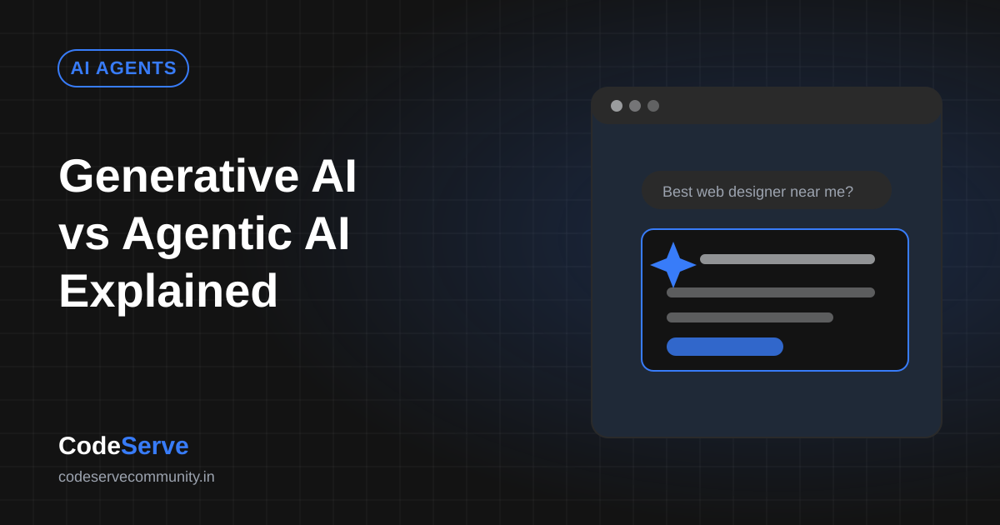
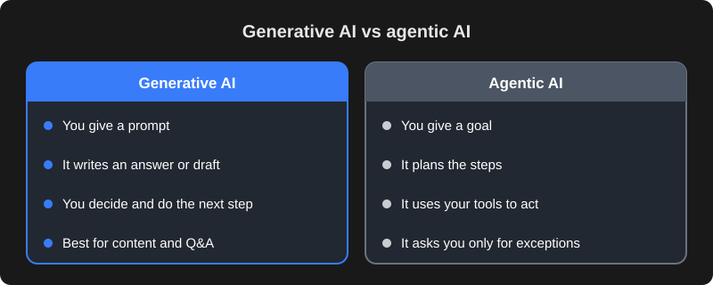
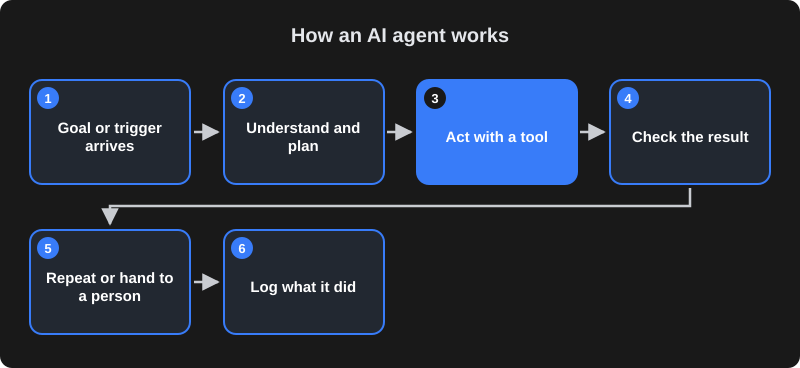

What is the difference between generative AI and agentic AI?
Generative AI produces content in response to a prompt — text, images, code or summaries — and a person decides what to do with it. Agentic AI uses a generative model as its 'brain' but adds goals, planning, memory and access to tools, so it can break a task into steps and carry them out, such as reading an enquiry, checking a calendar, booking an appointment and updating the CRM. In short: generative AI creates; agentic AI acts.
The simple explanation

Imagine you ask an assistant to deal with a customer enquiry.
- A generative AI assistant drafts a good reply. You read it, copy it into WhatsApp, check the calendar yourself, book the slot and update your records.
- An agentic AI assistant reads the enquiry, checks your calendar, offers the customer available slots, books the one they choose, sends a confirmation and logs everything in your CRM — asking you only when something is unusual.
Both use the same kind of underlying AI model. The difference is whether the AI only produces an answer or is allowed to take actions towards a goal.
What is generative AI?
Generative AI refers to models that create new content from patterns learned during training. Popular tools such as ChatGPT, Claude and Gemini are generative AI. They can:
- Write and rewrite text — emails, product descriptions, proposals, social posts.
- Summarise long documents, meeting notes or customer feedback.
- Answer questions, including from your own documents when set up with retrieval.
- Translate between English, Hindi, Telugu and other languages.
- Generate images, and write or explain code.
How it works in practice: one request in, one response out. A person gives the prompt, reviews the output and decides what happens next. Even an AI chatbot trained on your business data is mostly generative: it answers questions but usually doesn't change anything in your systems.
What is agentic AI?
Agentic AI describes systems built around AI agents — software that is given a goal and can decide and perform the steps needed to reach it. An agent typically combines:
- A generative model to understand requests and reason about what to do.
- Tools it is allowed to use: your CRM, calendar, email, WhatsApp, database, spreadsheets, payment links or internal APIs.
- Planning — breaking a goal into steps and choosing the order.
- Memory — remembering context within a task and, if designed so, across conversations.
- Feedback loops — checking results and adjusting, for example retrying when a slot is already taken.
The defining feature is autonomy within limits: the agent decides the next action itself instead of following a fixed script, but only inside the permissions and rules you give it.
How an AI agent works

Most business agents follow a loop like this:
- Receive a goal or trigger — a new WhatsApp enquiry, an email with an invoice, a request from a staff member.
- Understand and plan — what is being asked, what information is missing, which tools are needed.
- Act — call a tool: look up the customer, check stock, read a PDF, create a booking.
- Observe the result and decide the next step.
- Repeat until the goal is done, or hand over to a human when rules say so.
- Report — log what was done so a person can review it.
Agents are often connected to business tools through APIs, automation platforms like n8n or Make, or standards such as the Model Context Protocol (MCP) that let AI models use external tools in a consistent way.
Generative AI vs agentic AI: comparison
| Generative AI | Agentic AI | |
|---|---|---|
| Main job | Create content and answers | Complete tasks and reach goals |
| Interaction | One prompt, one response | Multi-step, plans and adjusts |
| Takes actions? | No — a person acts on the output | Yes — uses tools within set permissions |
| Access to your systems | Usually read-only or none | Read and write access to selected tools |
| Human role | Reviews every output | Sets goals and rules, approves exceptions |
| Typical uses | Writing, summarising, Q&A, translation | Lead handling, bookings, document processing, operations |
| Set-up effort | Low — start using a tool today | Higher — integrations, rules, testing |
| Risk if wrong | A poor draft you can fix | A wrong action in a real system, so guardrails matter |
Agentic AI is not a replacement for generative AI — it is built on top of it.
Chatbot, automation or agent?
Business owners often hear these terms used interchangeably. A useful way to separate them:
| Level | What it does | Example |
|---|---|---|
| AI chatbot (generative) | Answers questions from your information | Website bot explains your services and fees |
| Workflow automation (rule-based) | Follows fixed "if this, then that" steps | Form submitted → add to Sheet → WhatsApp alert |
| AI-assisted workflow | Fixed steps, with AI for one task inside | Invoice email → AI extracts amount and GSTIN → saved to accounts sheet |
| AI agent (agentic) | Decides steps itself to reach a goal | Handles an enquiry end-to-end: qualifies, books, updates CRM, follows up |
Many problems are best solved at the second or third level, which is cheaper and more predictable. Agents earn their place when tasks vary a lot and need judgement. Our guides on automating lead generation and n8n vs Zapier vs Make cover the workflow levels in detail.
Business examples
Generative AI in a small business
- A boutique writes product descriptions and Instagram captions in minutes.
- A CA firm summarises long circulars for clients in simple language.
- A coaching centre drafts parent communication in English and Telugu.
- A sales team turns call notes into a clean proposal draft.
Agentic AI in a small business
- Clinic front desk agent: answers a WhatsApp enquiry, checks doctor availability, books the appointment, sends a reminder the day before and reschedules if the patient asks.
- Accounts agent: reads supplier invoices from email, extracts details, matches them against purchase orders, records them and flags mismatches for review.
- Sales follow-up agent: qualifies new leads, updates the CRM, sends the right brochure, and schedules a callback with the correct salesperson.
- E-commerce support agent: checks order status in the store, explains delivery timelines, starts a return within policy, and escalates damaged-item cases with photos.
These are illustrative examples of what agents can be designed to do; each needs careful scoping, testing and the right permissions.
Risks and guardrails
Because agents take actions, the cost of a mistake is higher than a bad draft. Good agent design includes:
- Least privilege: give access only to the tools and data the task needs — for example, create bookings but not delete customer records.
- Human approval for sensitive actions: refunds, payments, discounts, messages to large groups.
- Clear limits: topics the agent must not handle, such as medical or legal advice.
- Logging: every action recorded so you can see what happened and why.
- Testing with real scenarios, including unusual and adversarial ones, before going live.
- Data protection: collect only what is needed and handle personal data in line with India's data protection rules.
- Cost control: agents may call the AI model several times per task, so set usage limits and monitor costs.
Which does your business need?
| If your goal is… | Start with |
|---|---|
| Writing, summarising or translating faster | Generative AI tools used by your team |
| Answering customer questions 24/7 | A generative AI chatbot trained on your data |
| Moving data between tools reliably | Workflow automation, possibly with AI for one step |
| Handling varied, multi-step tasks with judgement | An AI agent with clear guardrails |
Most small businesses get the quickest value from generative AI and simple automation first, then add agents for one well-defined process once they see where time is really being lost. More ideas are in 10 AI automations every small business can use.
How to get started
- List repetitive tasks your team does every day and how long they take.
- Mark which ones need content (generative AI) and which need actions in your systems (automation or agents).
- Pick one process with clear rules and measurable time savings.
- Check your tools — does your CRM, calendar or software have an API the agent can use?
- Define guardrails: permissions, approval steps and handover rules.
- Pilot with a small group, review logs weekly and measure results.
- Expand only after the first agent works reliably.
Frequently asked questions
Is ChatGPT generative AI or agentic AI?
ChatGPT is primarily a generative AI tool. Some versions can use tools such as web browsing or perform multi-step tasks, which are agentic features, but in normal use it produces answers for a person to act on.
Is an AI chatbot an AI agent?
Not necessarily. A chatbot that only answers questions is generative AI. It becomes an agent when it can take actions towards a goal, such as booking appointments or updating records, using tools you allow.
Is agentic AI safe for small businesses?
It can be, when designed with limited permissions, human approval for sensitive actions, clear rules, logging and thorough testing. Start with one low-risk process before giving an agent more responsibility.
Do I need agentic AI, or is automation enough?
If a task follows the same steps every time, rule-based automation is cheaper and more predictable. Agents are worth it when tasks vary and need judgement, such as handling different kinds of customer requests.
How much does an AI agent cost to build?
It depends on the number of tools it connects to, the complexity of decisions, and the volume of tasks. Costs include one-time development plus ongoing AI model usage. A focused agent for one process costs far less than a broad multi-department agent.
Will AI agents replace employees?
Agents are best at repetitive, rules-based parts of work. In most small businesses they free staff from routine tasks so they can focus on customers, sales and decisions that need human judgement.
About the author
CodeServe Team — the web development and automation team at CodeServe Community in KPHB, Kukatpally, Hyderabad. We build websites, AI chatbots, automation and business software, and write these guides from the questions clients ask us. Related service: learn how we can help.